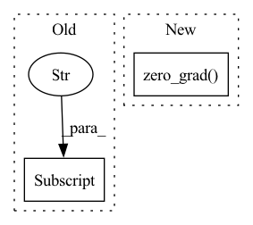

Pattern ID :6125
Before Change
if self.opt.lambda_gan != 0:
(
loss_value["ADV_src"],
loss_value["ADV_tgt"] ,
) = self.__optimize_D__()
else:
loss_value["ADV_src"], loss_value["ADV_tgt"] = 0After Change
if not self.use_g_encode:
self.optimizer_G.zero_grad()
self.loss_G.backward(retain_graph=True)
self.optimizer_D.zero_grad()
self.loss_D.backward(retain_graph=True)
self.optimizer_EF.zero_grad()
self.loss_E.backward()
In pattern: SUPERPATTERN
Frequency: 4
Non-data size: 2
Instances Fragment ID: 21135463
Project Name: wang-ml-lab/grda
Commit Name: dafc62158945abdc09df2ec246506a2753cde622
Time: 2022-01-30
Author: 1927045093@qq.com
File Name: model/model.py
M Class Name: MDD
N Class Name: MDD
M Method Name: __optimize__(1)
N Method Name: __optimize__(1)
M Parent Class: BaseModel
N Parent Class: BaseModel
M File Name: model/model.py
N File Name: model/model.py
M Start Line: 733
M End Line: 746
N Start Line: 679
N End Line: 702
Before Change
alpha_loss.backward()
optimizer.step()
logs["losses/alpha_loss"] = alpha_loss.item()
logs["alpha"] = log_alpha.exp().item()
return logs
After Change
.clamp(-100.0, 100.0)
)
alpha_loss = -(log_alphas[i] * (logp_a + target_entropy).detach()).mean()
optimizers[i].zero_grad()
alpha_loss.backward()
optimizers[i].step()
logs[f"losses/alpha_loss_{i}"] = alpha_loss.item()
logs[f"alphas/alpha_{i}"] = log_alphas[i].exp().item() Fragment ID: 21135464
Project Name: jakegrigsby/super_sac
Commit Name: 819313070dbb7c72886cafb948c401c78eb03861
Time: 2021-10-12
Author: jcg6dn@virginia.edu
File Name: uafbc/learning.py
M Class Name: AnonimousClass
N Class Name: AnonimousClass
M Method Name: alpha_update(9)
N Method Name: alpha_update(9)
M Parent Class:
N Parent Class:
M File Name: uafbc/learning.py
N File Name: uafbc/learning.py
M Start Line: 185
M End Line: 198
N Start Line: 191
N End Line: 211
Before Change
datum, label = self.dataloader.dataset[pointer]
data += [datum]
labels += [torch.as_tensor(label)]
pointer += server_payload["data"] .classes
pointer = pointer % len(self.dataloader.dataset)
data = torch.stack(data).to(**self.setup)
labels = torch.stack(labels).to(device=self.setup["device"])After Change
seen_data_idx += self.num_data_per_local_update_step
seen_data_idx = seen_data_idx % self.num_data_points
optimizer.zero_grad()
// Compute the forward pass
outputs = self.model(data)
loss = self.loss(outputs, labels)
loss.backward() Fragment ID: 21135470
Project Name: jonasgeiping/breaching
Commit Name: 1ab2867fea20551797c9aea8ae67099093ec7180
Time: 2021-10-01
Author: jonas.geiping@googlemail.com
File Name: breaching/cases/users.py
M Class Name: UserMultiStep
N Class Name: UserMultiStep
M Method Name: compute_local_updates(2)
N Method Name: compute_local_updates(2)
M Parent Class: UserSingleStep
N Parent Class: UserSingleStep
M File Name: breaching/cases/users.py
N File Name: breaching/cases/users.py
M Start Line: 151
M End Line: 187
N Start Line: 158
N End Line: 200
Before Change
self.doOptimize()
if i % self.conf.log_every == 0:
self.addScalar("{}/Loss".format(self.phase), self.loss.item(), self.iter)
LOG.logI("{}: [{}][{}/{}] [Loss:{} Lr:{}]".format(self.phase, self.epoch, self.step, loader_len,self.loss.item(),self.optimizer.param_groups[0]["lr"] ))
self.postIter()
if self.step in self.save_list:
self.processVal()After Change
self.preIter()
self.earlyIter()
self.export3rd()
self.optimizer.zero_grad()
self.doForward()
self.doLoss()
self.doBackward()
self.doOptimize() Fragment ID: 21135471
Project Name: deepvac/deepvac
Commit Name: 0fb2cef3d105eaf9a0e9e9d8819ebe9a4d147d81
Time: 2020-09-03
Author: gemfield@civilnet.cn
File Name: deepvac/syszux_deepvac.py
M Class Name: DeepvacTrain
N Class Name: DeepvacTrain
M Method Name: processTrain(1)
N Method Name: processTrain(1)
M Parent Class: Deepvac
N Parent Class: Deepvac
M File Name: deepvac/syszux_deepvac.py
N File Name: deepvac/syszux_deepvac.py
M Start Line: 473
M End Line: 494
N Start Line: 482
N End Line: 502